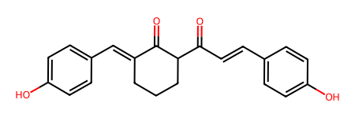

import polars as pl
import datamol as dmUsing datamol - Python library that works with molecules
Current post
Key question: Will compound 3’s scaffold be similar to the scaffolds of any approved anti-infectives? - if similar implying it might be a good hit (with similar bacterial targets? if so this can be backed up with experimental findings from the paper, or if different targets, it might lead to a new type of anti-infective hits)
Tasks for current post: - Convert anti-infective compounds & compounds 1-3’s SMILES into SELFIES (more robust for ML models) - Get scaffolds of the anti-infective compounds from ChEMBL + compounds 1-3 - Get fragments of these anti-infective compounds + compounds 1-3 (?optional) - Align compounds 1-3 with other scaffolds from ChEMBL - Look for MCS (maximum common structure) - Identify any similarities or differences between anti-infectives from ChEMBL and compound 3
Features to demonstrate: - Using Polars dataframe library along with datamol Python library (probably a small degree only, as datamol was written with Pandas in mind only) - Integrating experimental results from paper from PhD work into cheminformatics project (validation always crucial for computational predictions) - Advancing from pure organic chemistry and computational chemistry without code into utilising data science tools and packages by coding in Python to direct project pathway
Tentative future plan for next post: - Once found scaffolds, fragments or MCS, set up a ML model as a predictive model prototype foraging for potential small molecules as anti-infective hits (random forest or other types e.g. ?XGBoost and so on)
df_ai = pl.read_csv("chembl_anti-inf.csv", sep = ";")
df_ai.head()
shape: (5, 29)
| Parent Molecule | Name | Synonyms | Research Codes | Phase | Drug Applicants | USAN Stem | USAN Year | USAN Definition | USAN Stem - Substem | First Approval | ATC Codes | Level 4 ATC Codes | Level 3 ATC Codes | Level 2 ATC Codes | Level 1 ATC Codes | Indication Class | Patent | Drug Type | Passes Rule of Five | First In Class | Chirality | Prodrug | Oral | Parenteral | Topical | Black Box | Availability Type | Smiles |
|---|---|---|---|---|---|---|---|---|---|---|---|---|---|---|---|---|---|---|---|---|---|---|---|---|---|---|---|---|
| str | str | str | str | f64 | str | str | str | str | str | str | str | str | str | str | str | str | str | str | i64 | i64 | str | i64 | i64 | i64 | i64 | i64 | str | str |
| "CHEMBL374975" | "FUSIDIC ACID" | "ANHYDROUS FUSI... | "CEM-102|NSC-56... | 4.0 | "" | "" | "1967" | "" | "" | "" | "J01XC01 | S01A... | "J01XC - Steroi... | "J01X - OTHER A... | "J01 - ANTIBACT... | "J - ANTIINFECT... | "Antibacterial" | "None" | "1:Synthetic Sm... | 0 | 0 | "Single Stereoi... | 0 | 0 | 0 | 0 | 0 | "Unknown" | "CC(=O)O[C@H]1C... |
| "CHEMBL130" | "CHLORAMPHENICO... | "9-HYDROXY-9-PH... | "NSC-16331|NSC-... | 4.0 | "Ivax Pharmaceu... | "" | "" | "" | "" | "1950" | "S01AA01 | S03A... | "S01AA - Antibi... | "S01A - ANTIINF... | "S01 - OPHTHALM... | "S - SENSORY OR... | "Antibacterial;... | "None" | "1:Synthetic Sm... | 1 | 0 | "Single Stereoi... | 0 | 1 | 1 | 1 | 0 | "Unknown" | "O=C(N[C@H](CO)... |
| "CHEMBL186" | "CEFEPIME" | "BMY-28142|CEFE... | "BMY-28142|J01D... | 4.0 | "Samson Medical... | "'cef-'" | "1987" | "cephalosporins... | "'cef-(cef-)'" | "1996" | "J01DE01" | "J01DE - Fourth... | "J01D - OTHER B... | "J01 - ANTIBACT... | "J - ANTIINFECT... | "Antibacterial" | "None" | "1:Synthetic Sm... | 1 | 0 | "Single Stereoi... | 0 | 0 | 1 | 0 | 0 | "Prescription O... | "CO/N=C(\C(=O)N... |
| "CHEMBL222645" | "FLOXACILLIN" | "ABBOFLOX|BRL 2... | "BRL 2039|BRL-2... | 4.0 | "" | "'-cillin'" | "1972" | "penicillins" | "'-cillin(-cill... | "" | "J01CF05" | "J01CF - Beta-l... | "J01C - BETA-LA... | "J01 - ANTIBACT... | "J - ANTIINFECT... | "Antibacterial" | "None" | "1:Synthetic Sm... | 1 | 0 | "Single Stereoi... | 0 | 0 | 0 | 0 | 0 | "Unknown" | "Cc1onc(-c2c(F)... |
| "CHEMBL2364632" | "SARECYCLINE" | "P-005672|P0056... | "P-005672|P0056... | 4.0 | "Almirall Llc" | "'-cycline'" | "2012" | "antibiotics (t... | "'-cycline(-cyc... | "2018" | "J01AA14" | "J01AA - Tetrac... | "J01A - TETRACY... | "J01 - ANTIBACT... | "J - ANTIINFECT... | "" | "US-8318706-B2" | "1:Synthetic Sm... | 1 | 0 | "Single Stereoi... | 0 | 1 | 0 | 0 | 0 | "Prescription O... | "CON(C)Cc1ccc(O... |
print(df_ai.glimpse())Rows: 144
Columns: 29
$ Parent Molecule <Utf8> CHEMBL374975, CHEMBL130, CHEMBL186, CHEMBL222645, CHEMBL2364632, CHEMBL62193, CHEMBL2303613, CHEMBL31, CHEMBL268869, CHEMBL3039597
$ Name <Utf8> FUSIDIC ACID, CHLORAMPHENICOL, CEFEPIME, FLOXACILLIN, SARECYCLINE, SULFADIMETHOXINE, CEFODIZIME, GATIFLOXACIN, SULFAMETHOXYPYRIDAZINE, GENTAMICIN
$ Synonyms <Utf8> ANHYDROUS FUSIDIC ACID|CEM-102|FUCIDIN CAVIJECT|FUCITHALMIC|FUSIDATE|FUSIDIC ACID|NSC-56192|RAMYCIN|SQ 16,603|SQ-16603|TAKSTA, 9-HYDROXY-9-PHENYLXANTHENE|9-PHENYL-9H-XANTHEN-9-OL|AMPHICOL|BROCHLOR|BROLENE ANTIBIOTIC|CHLORAMPHENICOL|CHLOROFAIR|CHLOROPTIC|CHLOROPTIC S.O.P.|Chloramex|Chloramphenicol|Chlorbiotic|Chloromycetin|ECONOCHLOR|GOLDEN EYE ANTIBIOTIC|KEMICETINE|KLORAFECT|Kernispray|MYCHEL|Mychel-S|NSC-16331|NSC-3069|OPHTHOCHLOR|OPTOMYCIN|SNO PHENICOL|TUBILUX INFECTED EYES|Tevcocin|XANTHEN-9-OL, 9-PHENYL-, BMY-28142|CEFEPIME|J01DE01|Maxipime|RENAPIME|VNRX-5022, ABBOFLOX|BRL 2039|BRL-2039|CULPEN|FLOXACILLIN|FLOXACILLIN SODIUM|FLOXACILLIN SODIUM ANHYDROUS|FLUCLOMIX-250|FLUCLOMIX-500|FLUCLOXACILLIN|FLUCLOXACILLIN SODIUM|FLUCLOXACILLIN SODIUM ANHYDROUS|FLUCLOXACILLIN SODIUM MONOHYDRATE|FLUCLOXIN|Floxapen|GALFLOXIN|LADROPEN|NSC-277175|RIMAFLOX|STAFOXIL|STAPHLIPEN|STAPHYLEX|ZOXIN 250|ZOXIN 500, P-005672|P005672|SARECYCLINE, Madribon|NSC-683544|NSC-757860|SULFADIMETHOXINE|SULPHADIMETHOXINE, CEFODIZIME|CEFODIZIME DISODIUM|CEFODIZIME DISODIUM SALT|CEFODIZIME SODIUM|Cefodizime|HR 221|HR 221 [AS SODIUM]|HR-221|S 77 1221 B|S 77 1221 B [AS SODIUM]|S 77-1221B|S-77-1221-B|S-77-1221B|THR 221|THR 221 [AS SODIUM]|THR-221|TIMECEF, AM-1155|BMS-206584-01|BMS-20658401|GATIFLO|GATIFLOXACIN|GATIFLOXACIN (SESQUIHYDRATE)|GATIFLOXACIN ANHYDROUS|GATIFLOXACIN HYDRATE|GATIFLOXACIN SESQUIHYDRATE|NSC-758701|PD-135432|Tequin|ZYMAXID|ZYMER|Zymar, CL-13494|DEPOVERNIL|LEDERKYN|Midicel|NSC-757875|RETASULPHINE|SUCCINYLSULFATHI|SULFAMETHOXYPYRIDAZINE|SULFAMETHOXYPYRIDAZINUM|SULFASUXIDINE|SULPHAMETHOXYPYRIDAZINE, GENTAMICIN|GENTAMYCIN|LYRAMYCIN|OKSITSELANIM|SCH-9724|SEPTIGEN|Uromycine
$ Research Codes <Utf8> CEM-102|NSC-56192|SQ 16,603|SQ-16603, NSC-16331|NSC-3069, BMY-28142|J01DE01|VNRX-5022, BRL 2039|BRL-2039|NSC-277175, P-005672|P005672, NSC-683544|NSC-757860, HR 221|HR 221 [AS SODIUM]|HR-221|S 77 1221 B|S 77 1221 B [AS SODIUM]|S 77-1221B|S-77-1221-B|S-77-1221B|THR 221|THR 221 [AS SODIUM]|THR-221, AM-1155|BMS-206584-01|BMS-20658401|NSC-758701|PD-135432, CL-13494|NSC-757875, SCH-9724
$ Phase <Float64> 4.0, 4.0, 4.0, 4.0, 4.0, 4.0, 4.0, 4.0, 4.0, 4.0
$ Drug Applicants <Utf8> , Ivax Pharmaceuticals Inc Sub Teva Pharmaceuticals Usa|Armenpharm Ltd|Optopics Laboratories Corp|John J Ferrante|Parkedale Pharmaceuticals Inc|Alcon Laboratories Inc|Pharmafair Inc|Parke Davis Pharmaceutical Research Div Warner Lambert Co|Allergan Pharmaceutical|Akorn Operating Co Llc, Samson Medical Technologies Llc|Fosun Pharma Usa Inc|Sagent Pharmaceuticals Inc|Hospira Inc|B Braun Medical Inc|Acs Dobfar Spa|Astral Steritech Pvt Ltd|Qilu Pharmaceutical Co Ltd|Baxter Healthcare Corp, , Almirall Llc, , , Apotex Inc|Bristol Myers Squibb|Sandoz Inc|Allergan|Bristol Myers Squibb Co Pharmaceutical Research Institute|Allergan Inc|Akorn Operating Co Llc|Torrent Pharmaceuticals Ltd|Lupin Ltd|Rising Pharma Holdings Inc, , Schering Corp Sub Schering Plough Corp|Watson Laboratories Inc|Abbott Laboratories Pharmaceutical Products Div|Fougera Pharmaceuticals Inc|Bausch And Lomb Pharmaceuticals Inc|Taro Pharmaceuticals Usa Inc|Novartis Pharmaceuticals Corp|Allergan Pharmaceutical|Akorn Operating Co Llc|Cosette Pharmaceuticals Inc
$ USAN Stem <Utf8> , , 'cef-', '-cillin', '-cycline', 'sulfa-', 'cef-', '-oxacin', 'sulfa-', '-micin'
$ USAN Year <Utf8> 1967, , 1987, 1972, 2012, , , 1997, , 1963
$ USAN Definition <Utf8> , , cephalosporins, penicillins, antibiotics (tetracycline derivatives), antimicrobials (sulfonamides derivatives), cephalosporins, antibacterials (quinolone derivatives), antimicrobials (sulfonamides derivatives), antibiotics (Micromonospora strains)
$ USAN Stem - Substem <Utf8> , , 'cef-(cef-)', '-cillin(-cillin)', '-cycline(-cycline)', 'sulfa-(sulfa-)', 'cef-(cef-)', '-oxacin(-oxacin)', 'sulfa-(sulfa-)', '-micin(-micin)'
$ First Approval <Utf8> , 1950, 1996, , 2018, , , 1999, , 1970
$ ATC Codes <Utf8> J01XC01 | S01AA13 | D06AX01 | D09AA02, S01AA01 | S03AA08 | D06AX02 | G01AA05 | S02AA01 | D10AF03 | J01BA01, J01DE01, J01CF05, J01AA14, J01ED01, J01DD09, S01AE06 | J01MA16, J01ED05, S01AA11 | S02AA14 | J01GB03 | S03AA06 | D06AX07
$ Level 4 ATC Codes <Utf8> J01XC - Steroid antibacterials | S01AA - Antibiotics | D06AX - Other antibiotics for topical use | D09AA - Medicated dressings with antiinfectives, S01AA - Antibiotics | S03AA - Antiinfectives | D06AX - Other antibiotics for topical use | G01AA - Antibiotics | S02AA - Antiinfectives | D10AF - Antiinfectives for treatment of acne | J01BA - Amphenicols, J01DE - Fourth-generation cephalosporins, J01CF - Beta-lactamase resistant penicillins, J01AA - Tetracyclines, J01ED - Long-acting sulfonamides, J01DD - Third-generation cephalosporins, S01AE - Fluoroquinolones | J01MA - Fluoroquinolones, J01ED - Long-acting sulfonamides, S01AA - Antibiotics | S02AA - Antiinfectives | J01GB - Other aminoglycosides | S03AA - Antiinfectives | D06AX - Other antibiotics for topical use
$ Level 3 ATC Codes <Utf8> J01X - OTHER ANTIBACTERIALS | S01A - ANTIINFECTIVES | D06A - ANTIBIOTICS FOR TOPICAL USE | D09A - MEDICATED DRESSINGS, S01A - ANTIINFECTIVES | S03A - ANTIINFECTIVES | D06A - ANTIBIOTICS FOR TOPICAL USE | G01A - ANTIINFECTIVES AND ANTISEPTICS, EXCL. COMBINATIONS WITH CORTICOSTEROIDS | S02A - ANTIINFECTIVES | D10A - ANTI-ACNE PREPARATIONS FOR TOPICAL USE | J01B - AMPHENICOLS, J01D - OTHER BETA-LACTAM ANTIBACTERIALS, J01C - BETA-LACTAM ANTIBACTERIALS, PENICILLINS, J01A - TETRACYCLINES, J01E - SULFONAMIDES AND TRIMETHOPRIM, J01D - OTHER BETA-LACTAM ANTIBACTERIALS, S01A - ANTIINFECTIVES | J01M - QUINOLONE ANTIBACTERIALS, J01E - SULFONAMIDES AND TRIMETHOPRIM, S01A - ANTIINFECTIVES | S02A - ANTIINFECTIVES | J01G - AMINOGLYCOSIDE ANTIBACTERIALS | S03A - ANTIINFECTIVES | D06A - ANTIBIOTICS FOR TOPICAL USE
$ Level 2 ATC Codes <Utf8> J01 - ANTIBACTERIALS FOR SYSTEMIC USE | S01 - OPHTHALMOLOGICALS | D06 - ANTIBIOTICS AND CHEMOTHERAPEUTICS FOR DERMATOLOGICAL USE | D09 - MEDICATED DRESSINGS, S01 - OPHTHALMOLOGICALS | S03 - OPHTHALMOLOGICAL AND OTOLOGICAL PREPARATIONS | D06 - ANTIBIOTICS AND CHEMOTHERAPEUTICS FOR DERMATOLOGICAL USE | G01 - GYNECOLOGICAL ANTIINFECTIVES AND ANTISEPTICS | S02 - OTOLOGICALS | D10 - ANTI-ACNE PREPARATIONS | J01 - ANTIBACTERIALS FOR SYSTEMIC USE, J01 - ANTIBACTERIALS FOR SYSTEMIC USE, J01 - ANTIBACTERIALS FOR SYSTEMIC USE, J01 - ANTIBACTERIALS FOR SYSTEMIC USE, J01 - ANTIBACTERIALS FOR SYSTEMIC USE, J01 - ANTIBACTERIALS FOR SYSTEMIC USE, S01 - OPHTHALMOLOGICALS | J01 - ANTIBACTERIALS FOR SYSTEMIC USE, J01 - ANTIBACTERIALS FOR SYSTEMIC USE, S01 - OPHTHALMOLOGICALS | S02 - OTOLOGICALS | J01 - ANTIBACTERIALS FOR SYSTEMIC USE | S03 - OPHTHALMOLOGICAL AND OTOLOGICAL PREPARATIONS | D06 - ANTIBIOTICS AND CHEMOTHERAPEUTICS FOR DERMATOLOGICAL USE
$ Level 1 ATC Codes <Utf8> J - ANTIINFECTIVES FOR SYSTEMIC USE | S - SENSORY ORGANS | D - DERMATOLOGICALS | D - DERMATOLOGICALS, S - SENSORY ORGANS | S - SENSORY ORGANS | D - DERMATOLOGICALS | G - GENITO URINARY SYSTEM AND SEX HORMONES | S - SENSORY ORGANS | D - DERMATOLOGICALS | J - ANTIINFECTIVES FOR SYSTEMIC USE, J - ANTIINFECTIVES FOR SYSTEMIC USE, J - ANTIINFECTIVES FOR SYSTEMIC USE, J - ANTIINFECTIVES FOR SYSTEMIC USE, J - ANTIINFECTIVES FOR SYSTEMIC USE, J - ANTIINFECTIVES FOR SYSTEMIC USE, S - SENSORY ORGANS | J - ANTIINFECTIVES FOR SYSTEMIC USE, J - ANTIINFECTIVES FOR SYSTEMIC USE, S - SENSORY ORGANS | S - SENSORY ORGANS | J - ANTIINFECTIVES FOR SYSTEMIC USE | S - SENSORY ORGANS | D - DERMATOLOGICALS
$ Indication Class <Utf8> Antibacterial, Antibacterial; Antirickettsial, Antibacterial, Antibacterial, , , , Antibacterial, , Antibacterial
$ Patent <Utf8> None, None, None, None, US-8318706-B2, None, None, None, None, None
$ Drug Type <Utf8> 1:Synthetic Small Molecule, 1:Synthetic Small Molecule, 1:Synthetic Small Molecule, 1:Synthetic Small Molecule, 1:Synthetic Small Molecule, 1:Synthetic Small Molecule, 1:Synthetic Small Molecule, 1:Synthetic Small Molecule, 1:Synthetic Small Molecule, 1:Synthetic Small Molecule
$ Passes Rule of Five <Int64> 0, 1, 1, 1, 1, 1, 0, 1, 1, 0
$ First In Class <Int64> 0, 0, 0, 0, 0, 0, 0, 0, 0, 0
$ Chirality <Utf8> Single Stereoisomer, Single Stereoisomer, Single Stereoisomer, Single Stereoisomer, Single Stereoisomer, Achiral Molecule, Single Stereoisomer, Racemic Mixture, Achiral Molecule, Unknown
$ Prodrug <Int64> 0, 0, 0, 0, 0, 0, 0, 0, 0, 0
$ Oral <Int64> 0, 1, 0, 0, 1, 0, 0, 1, 0, 0
$ Parenteral <Int64> 0, 1, 1, 0, 0, 0, 0, 1, 0, 1
$ Topical <Int64> 0, 1, 0, 0, 0, 0, 0, 1, 0, 1
$ Black Box <Int64> 0, 0, 0, 0, 0, 0, 0, 0, 0, 1
$ Availability Type <Utf8> Unknown, Unknown, Prescription Only, Unknown, Prescription Only, Withdrawn, Unknown, Prescription Only, Withdrawn, Prescription Only
$ Smiles <Utf8> CC(=O)O[C@H]1C[C@@]2(C)[C@@H](C[C@@H](O)[C@H]3[C@@]4(C)CC[C@@H](O)[C@@H](C)[C@@H]4CC[C@@]32C)/C1=C(\CCC=C(C)C)C(=O)O, O=C(N[C@H](CO)[C@H](O)c1ccc([N+](=O)[O-])cc1)C(Cl)Cl, CO/N=C(\C(=O)N[C@@H]1C(=O)N2C(C(=O)[O-])=C(C[N+]3(C)CCCC3)CS[C@H]12)c1csc(N)n1, Cc1onc(-c2c(F)cccc2Cl)c1C(=O)N[C@@H]1C(=O)N2[C@@H]1SC(C)(C)[C@@H]2C(=O)O, CON(C)Cc1ccc(O)c2c1C[C@H]1C[C@H]3[C@H](N(C)C)C(O)=C(C(N)=O)C(=O)[C@@]3(O)C(O)=C1C2=O, COc1cc(NS(=O)(=O)c2ccc(N)cc2)nc(OC)n1, CO/N=C(\C(=O)N[C@@H]1C(=O)N2C(C(=O)O)=C(CSc3nc(C)c(CC(=O)O)s3)CS[C@H]12)c1csc(N)n1, COc1c(N2CCNC(C)C2)c(F)cc2c(=O)c(C(=O)O)cn(C3CC3)c12, COc1ccc(NS(=O)(=O)c2ccc(N)cc2)nn1, CNC(C)[C@@H]1CC[C@@H](N)[C@@H](O[C@H]2[C@H](O)[C@@H](O[C@H]3OC[C@](C)(O)[C@H](NC)[C@H]3O)[C@H](N)C[C@@H]2N)O1.CN[C@@H]1[C@@H](O)[C@@H](O[C@@H]2[C@@H](O)[C@H](O[C@H]3O[C@H](C(C)N)CC[C@H]3N)[C@@H](N)C[C@H]2N)OC[C@]1(C)O.CN[C@@H]1[C@@H](O)[C@@H](O[C@@H]2[C@@H](O)[C@H](O[C@H]3O[C@H](CN)CC[C@H]3N)[C@@H](N)C[C@H]2N)OC[C@]1(C)O
df_ai_name_sm = df_ai.select(["Name", "Smiles"])
df_ai_name_sm.head()
shape: (5, 2)
| Name | Smiles |
|---|---|
| str | str |
| "FUSIDIC ACID" | "CC(=O)O[C@H]1C... |
| "CHLORAMPHENICO... | "O=C(N[C@H](CO)... |
| "CEFEPIME" | "CO/N=C(\C(=O)N... |
| "FLOXACILLIN" | "Cc1onc(-c2c(F)... |
| "SARECYCLINE" | "CON(C)Cc1ccc(O... |
# Convert polars dataframe into a pandas dataframe
df_ai_pd = df_ai_name_sm.to_pandas()
df_ai_pd| Name | Smiles | |
|---|---|---|
| 0 | FUSIDIC ACID | CC(=O)O[C@H]1C[C@@]2(C)[C@@H](C[C@@H](O)[C@H]3... |
| 1 | CHLORAMPHENICOL | O=C(N[C@H](CO)[C@H](O)c1ccc([N+](=O)[O-])cc1)C... |
| 2 | CEFEPIME | CO/N=C(\C(=O)N[C@@H]1C(=O)N2C(C(=O)[O-])=C(C[N... |
| 3 | FLOXACILLIN | Cc1onc(-c2c(F)cccc2Cl)c1C(=O)N[C@@H]1C(=O)N2[C... |
| 4 | SARECYCLINE | CON(C)Cc1ccc(O)c2c1C[C@H]1C[C@H]3[C@H](N(C)C)C... |
| ... | ... | ... |
| 139 | CIPROFLOXACIN | O=C(O)c1cn(C2CC2)c2cc(N3CCNCC3)c(F)cc2c1=O |
| 140 | NORFLOXACIN | CCn1cc(C(=O)O)c(=O)c2cc(F)c(N3CCNCC3)cc21 |
| 141 | SULFANILAMIDE | Nc1ccc(S(N)(=O)=O)cc1 |
| 142 | OFLOXACIN | CC1COc2c(N3CCN(C)CC3)c(F)cc3c(=O)c(C(=O)O)cn1c23 |
| 143 | AMDINOCILLIN | CC1(C)S[C@@H]2[C@H](/N=C/N3CCCCCC3)C(=O)N2[C@H... |
144 rows × 2 columns
# Make a molecule column from the smiles column
df_ai_pd["mol"] = df_ai_pd["Smiles"].apply(lambda x: dm.to_mol(x))
df_ai_pd.head()| Name | Smiles | mol | |
|---|---|---|---|
| 0 | FUSIDIC ACID | CC(=O)O[C@H]1C[C@@]2(C)[C@@H](C[C@@H](O)[C@H]3... | <rdkit.Chem.rdchem.Mol object at 0x126d47ed0> |
| 1 | CHLORAMPHENICOL | O=C(N[C@H](CO)[C@H](O)c1ccc([N+](=O)[O-])cc1)C... | <rdkit.Chem.rdchem.Mol object at 0x126de80b0> |
| 2 | CEFEPIME | CO/N=C(\C(=O)N[C@@H]1C(=O)N2C(C(=O)[O-])=C(C[N... | <rdkit.Chem.rdchem.Mol object at 0x126de8120> |
| 3 | FLOXACILLIN | Cc1onc(-c2c(F)cccc2Cl)c1C(=O)N[C@@H]1C(=O)N2[C... | <rdkit.Chem.rdchem.Mol object at 0x126de8190> |
| 4 | SARECYCLINE | CON(C)Cc1ccc(O)c2c1C[C@H]1C[C@H]3[C@H](N(C)C)C... | <rdkit.Chem.rdchem.Mol object at 0x126de8200> |
#selfies = dm.to_selfies(mol)# Grab all SMILES from df_ai
df_ai_sm = df_ai["Smiles"]
# Load a list of molecules in SMILES
# dm.to_mol default set with sanitize = True
mol_ls = [dm.to_mol(smile) for smile in df_ai_sm]
# Alternative way to convert dataframe into a list of mols (same as mol_ls)
# mols = dm.from_df(df_ai_pd, smiles_column="Smiles")
# Convert the list of molecules into 2D images
dm.to_image(mol_ls, n_cols = 5, mol_size = (400, 400))
# Extract Murcko scaffolds from mol_ls (ChEMBL anti-infectives)
m_scaffolds = [dm.to_scaffold_murcko(mol) for mol in mol_ls]
dm.to_image(m_scaffolds, mol_size = (400, 400))
The section below focuses on 3 compounds from this paper - Lin, H.-Y.J.; Battaje, R.R.; Tan, J.; Doddareddy, M.; Dhaked, H.P.S.; Srivastava, S.; Hawkins, B.A.; Al-Shdifat, L.M.H.; Hibbs, D.E.; Panda, D.; et al. Discovery of 2’,6-Bis(4-hydroxybenzyl)-2-acetylcyclohexanone, a Novel FtsZ Inhibitor. Molecules 2022, 27, 6993. https://doi.org/10.3390/molecules27206993
# Convert compound 1 to mol from InChI
cpd1 = dm.from_inchi("InChI=1S/C22H20O4/c23-18-9-4-15(5-10-18)8-13-21(25)20-3-1-2-17(22(20)26)14-16-6-11-19(24)12-7-16/h4-14,20,23-24H,1-3H2/b13-8+,17-14+")
cpd1
# Convert compound 2 SMILES to mol
cpd2 = dm.to_mol("OC1=C(C=CC=C1CC1=CC=C(C=C1)O)C(CCC1=CC=C(C=C1)O)=O")
cpd2
# Convert compound 3 SMILES to mol
cpd3 = dm.to_mol("OC1=CC=C(CC2C(C(CCC2)C(CCC2=CC=C(C=C2)O)=O)=O)C=C1")
cpd3
# Save these 3 compounds into a list
mol_lst = [cpd1, cpd2, cpd3]
mol_lst[<rdkit.Chem.rdchem.Mol at 0x127d6dd20>,
<rdkit.Chem.rdchem.Mol at 0x127d6dee0>,
<rdkit.Chem.rdchem.Mol at 0x127d6e110>]# Convert a list of mols to a dataframe
df = dm.to_df(mol_lst)
df| smiles | |
|---|---|
| 0 | O=C(/C=C/c1ccc(O)cc1)C1CCC/C(=C\c2ccc(O)cc2)C1=O |
| 1 | O=C(CCc1ccc(O)cc1)c1cccc(Cc2ccc(O)cc2)c1O |
| 2 | O=C(CCc1ccc(O)cc1)C1CCCC(Cc2ccc(O)cc2)C1=O |
names = ["Compound 1", "Compound 2", "Compound 3"]
df["names"] = names
df| smiles | names | |
|---|---|---|
| 0 | O=C(/C=C/c1ccc(O)cc1)C1CCC/C(=C\c2ccc(O)cc2)C1=O | Compound 1 |
| 1 | O=C(CCc1ccc(O)cc1)c1cccc(Cc2ccc(O)cc2)c1O | Compound 2 |
| 2 | O=C(CCc1ccc(O)cc1)C1CCCC(Cc2ccc(O)cc2)C1=O | Compound 3 |
# Pre-process molecules using _preprocess function - adapted with courtesy from datamol.io
smiles_column = "smiles"
dm.disable_rdkit_log()
def _preprocess(row):
mol = dm.to_mol(row[smiles_column], ordered=True)
mol = dm.fix_mol(mol)
mol = dm.sanitize_mol(mol, sanifix=True, charge_neutral=False)
mol = dm.standardize_mol(
mol,
disconnect_metals=False,
normalize=True,
reionize=True,
uncharge=False,
stereo=True,
)
row["standard_smiles"] = dm.standardize_smiles(dm.to_smiles(mol))
row["selfies"] = dm.to_selfies(mol)
row["inchi"] = dm.to_inchi(mol)
row["inchikey"] = dm.to_inchikey(mol)
return rowdata_cleaned = df.apply(_preprocess, axis=1)
data_cleaned| smiles | names | standard_smiles | selfies | inchi | inchikey | |
|---|---|---|---|---|---|---|
| 0 | O=C(/C=C/c1ccc(O)cc1)C1CCC/C(=C\c2ccc(O)cc2)C1=O | Compound 1 | O=C(/C=C/c1ccc(O)cc1)C1CCC/C(=C\c2ccc(O)cc2)C1=O | [O][=C][Branch1][=C][/C][=C][/C][=C][C][=C][Br... | InChI=1S/C22H20O4/c23-18-9-4-15(5-10-18)8-13-2... | QNBFRAOWJNMPAF-ZIQQYUHESA-N |
| 1 | O=C(CCc1ccc(O)cc1)c1cccc(Cc2ccc(O)cc2)c1O | Compound 2 | O=C(CCc1ccc(O)cc1)c1cccc(Cc2ccc(O)cc2)c1O | [O][=C][Branch1][=C][C][C][C][=C][C][=C][Branc... | InChI=1S/C22H20O4/c23-18-9-4-15(5-10-18)8-13-2... | CWVXMBYGWRWONE-UHFFFAOYSA-N |
| 2 | O=C(CCc1ccc(O)cc1)C1CCCC(Cc2ccc(O)cc2)C1=O | Compound 3 | O=C(CCc1ccc(O)cc1)C1CCCC(Cc2ccc(O)cc2)C1=O | [O][=C][Branch1][=C][C][C][C][=C][C][=C][Branc... | InChI=1S/C22H24O4/c23-18-9-4-15(5-10-18)8-13-2... | KWPXNGBFYRHREW-UHFFFAOYSA-N |